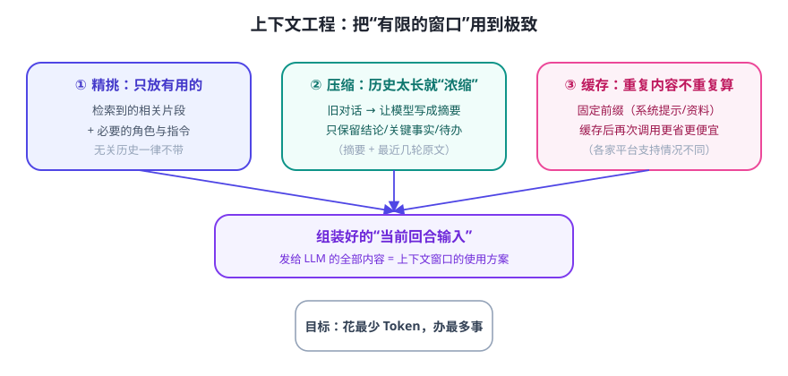

上下文窗口就像一张有限大的桌子。LLM 只能看到桌上的东西；你放什么、放多少、旧的怎么处理，直接决定回答质量、速度和账单。这套功夫叫上下文工程（Context Engineering）。
三板斧：精选 · 压缩 · 缓存

① 精选：只放有用的
- 多轮对话不是“全都要带”——只带最近几轮原文 + 更早内容的摘要。
- 外挂资料不是“全塞进去”——用检索只取相关片段（Day 11 RAG）。
- 重要信息前置：模型对开头和结尾更敏感，把“任务+关键约束”放最前。
② 压缩：太长就浓缩
经典做法（对话摘要）：当历史超过阈值，用一次额外的模型调用把旧对话压成摘要，例如：
请把下面的对话压缩成要点，保留：已确定的事实、用户偏好、未完成的待办。 不要丢失这些关键信息，其余可省略。 [旧对话……]
之后上下文里就是“摘要 + 最近几轮原文”，既连贯又不爆窗。
③ 缓存：重复内容不重复算
系统提示词和参考资料通常是每轮都带的“固定前缀”。很多平台支持提示词缓存（Prompt Caching）：相同前缀命中缓存后，价格更低、首字更快。工程上的启示：把不变的内容放前面、放一起，把变化的内容放后面，缓存才容易命中。
| 策略 | 解决什么问题 | 代价/注意 |
|---|---|---|
| 精选（检索/截断） | 塞不进 / 无关内容干扰 | 可能漏掉关键信息 |
| 压缩（摘要） | 历史太长 | 摘要会丢细节；多一次调用 |
| 缓存（复用前缀） | 重复计算贵、慢 | 各家平台支持与计费不同 |
⚠️ 常见事故：把几十万字文档直接塞进“超大窗口”，结果又贵又慢，模型反而“淹没”在无关内容里答非所问。窗口大 ≠ 应该全塞。
✍️ 今日练习（约 12 分钟）
- 找一个长对话（20 轮以上），让模型“用 5 个要点总结前面聊过什么”，再把摘要发回给它继续聊——体验“压缩”。
- 故意做一次“全塞”：把一段很长的资料贴进对话问它重点，再对比“先检索相关 3 段再问”，感受质量差异（如果你已有能上传文档的工具）。
- 设计你自己的对话记录格式：
摘要 + 最近 N 轮，写进笔记。
📌 今日小结
本质窗口 = 有限的桌面，上下文工程 = 收拾桌面的学问
三板斧精选（只放有用的）· 压缩（摘要化）· 缓存（复用前缀）
位置感重要指令放前，固定内容放一起（利于缓存）
警示窗口大 ≠ 全塞，无关内容会稀释注意力
明天预告：第一次写“真联网”的工具代码——做一个能查天气的命令行工具，并把它想成 Agent 的一只手。